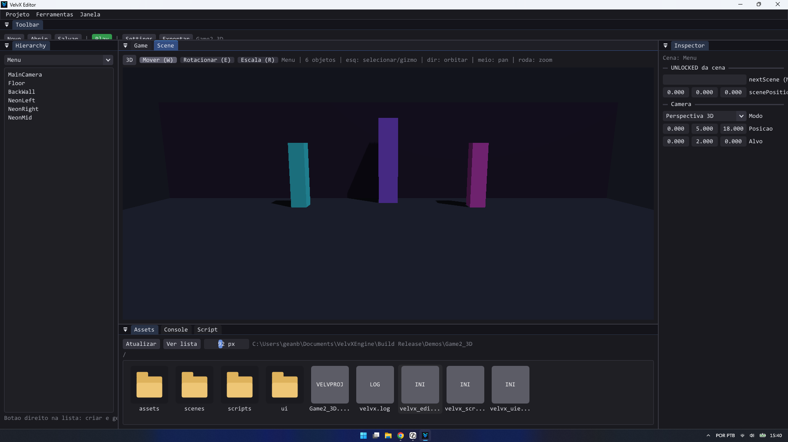
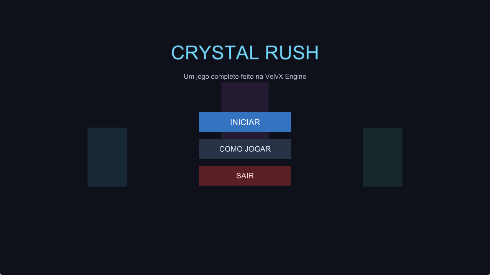
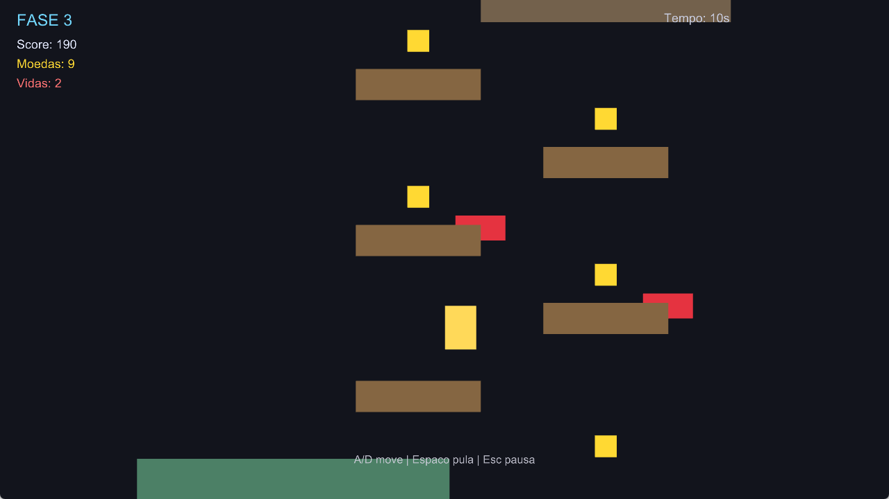
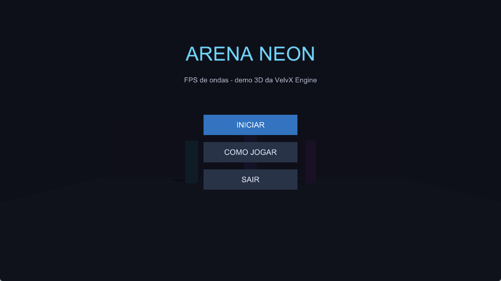
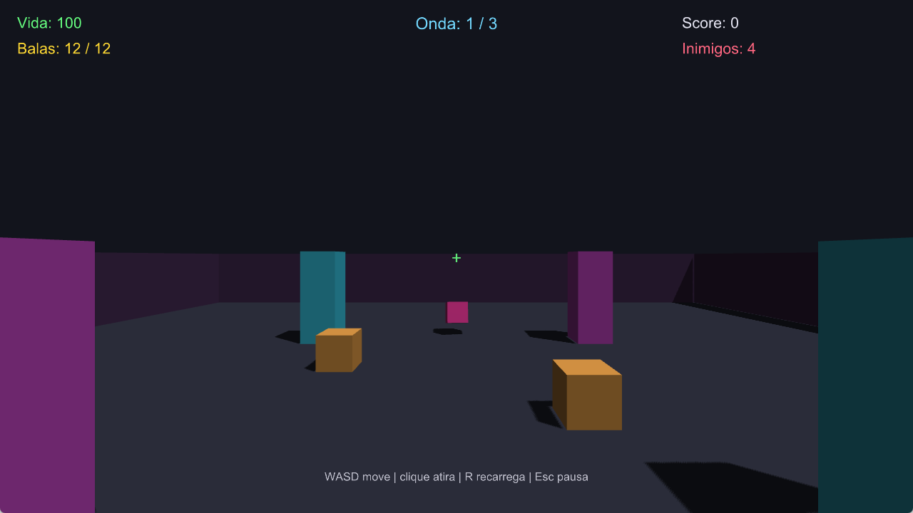
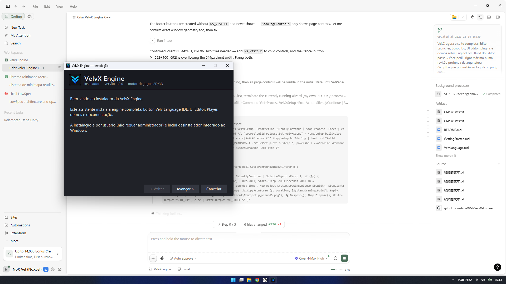
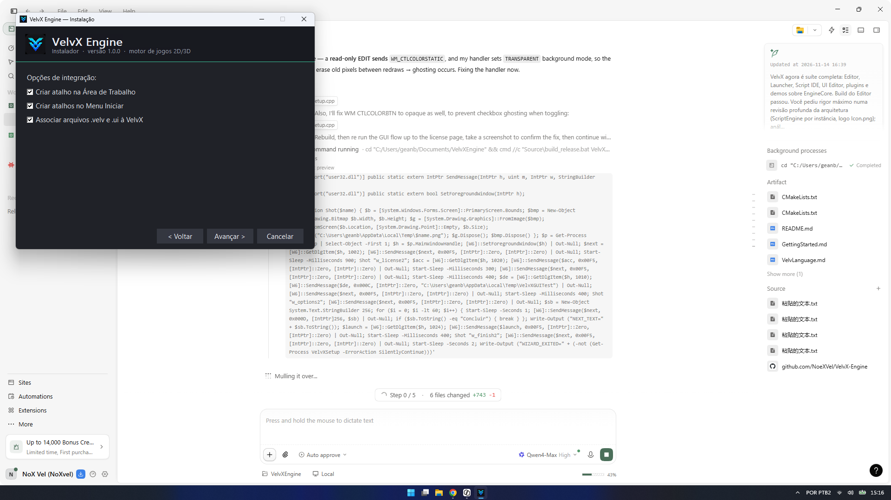

Uma engine completa com editor visual, física, renderização com sombras, linguagem de script própria (Velv) e instalador nativo para Windows. Do menu ao fim de jogo, tudo em um só lugar.
Ferramentas reais e integradas — não maquetes. Cada recurso abaixo existe no código e é coberto pela bateria de testes.
Hierarchy, Inspector, Asset Browser em thumbnails, gizmos de mover/rotacionar/escalar com hit-test, menus de contexto e undo/redo.
Editor unificado com autocomplete contextual, abas, busca/substituição e fechamento automático de blocos da linguagem Velv.
Monte menus e HUDs visualmente com widgets, prefabs de UI e vinculação direta aos scripts do jogo.
RigidBody/StaticBody, gravidade por objeto, restituição, atrito, cinemáticos, detecção de chão, tags e matriz de colisão.
OpenGL 3.3 core: sombras PCF, MSAA, câmera ortográfica e perspectiva, sprites, importar modelos via Assimp.
Scripting próprio com books, parâmetros, retorno, lock/unlock de variáveis e integração nativa com o Inspector.
API IPlugin + ComponentRegistry para estender a engine com componentes e sistemas customizados em C++.
Empacote o projeto em um ZIP executável e rode no VelvX Player standalone, sem o editor.
66 testes automatizados cobrindo núcleo, render, física, scripting, UI e ferramentas. Build limpo reproduzível.
Escolha o instalador completo (recomendado) ou a versão portátil. Ambos contêm o editor, as ferramentas, as demos e a documentação.
Instalador nativo com assistente passo a passo: licença, pasta de destino, atalhos e associação de arquivos.
.velvproj/S /D=<pasta>Um ZIP autocontido. Extraia em qualquer pasta e execute — ideal para pendrive ou para testar sem instalar.
Requisitos: Windows 10/11 64-bit com OpenGL 3.3. Código-fonte e histórico de versões em Releases e repositório.
Capturas reais do editor e das duas demos jogáveis que acompanham a engine.







Guias completos renderizados no site, sempre refletindo apenas o que a engine realmente implementa.
Do download ao primeiro jogo rodando.
Rode o setup e siga o assistente, ou extraia o ZIP portátil em uma pasta de sua escolha.
Inicie a VelvX Engine, crie um projeto ou abra uma das demos (Game1_2D / Game2_3D).
Aperte Play para testar no Player e use Export para gerar o pacote executável do seu jogo.